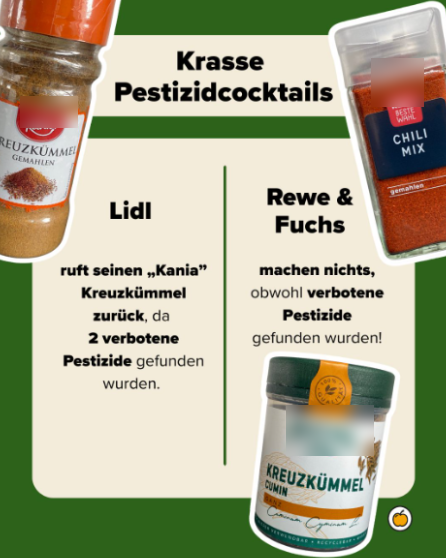

Kolumne
Liebe Foodwatch, ich mag euch
Burg und seine Meinung.
Aber manchmal geht ihr mir auf den Sack.

Es gibt Organisationen, bei denen weiß ich schon vorher, auf welcher Seite sie ungefähr stehen. Foodwatch gehört dazu.
Wenn die einen Lebensmittelkonzern, eine Mogelpackung oder irgendeinen Marketingtrick auseinandernehmen, sitze ich meistens nickend vor dem Bildschirm und denke: „Ja. Danke. Genau deswegen braucht es euch.“
Umso mehr hat mich ein aktueller Instagram-Beitrag genervt.
Dort ist von „krassen Pestizidcocktails“ die Rede. Es geht um belastete Gewürze, unter anderem Kania Kreuzkümmel von Lidl, Fuchs Kreuzkümmel und REWE Chili Mix. Foodwatch fordert Rückrufe, Rewe und Fuchs werden kritisiert, und irgendwo zwischen Gewürzglas und Alarmglocke steht plötzlich die Frage im Raum, ob mein Küchenschrank gerade eine Gefahrenzone ist.
Die Untersuchung dahinter scheint durchaus Hand und Fuß zu haben. Foodwatch hat nach eigenen Angaben Reis, Gewürze und Tee im Labor prüfen lassen. In mehreren Produkten wurden Rückstände von Pestiziden gefunden, die in der EU nicht zugelassen sind. Bei Fuchs Kreuzkümmel, Kania Kreuzkümmel und REWE Chili Mix fordert Foodwatch Rückrufe, weil Grenzwerte überschritten worden sein sollen. Das gehört untersucht. Das gehört veröffentlicht. Und wenn Grenzwerte überschritten werden, gehört darüber gesprochen.
So weit, so gut.
Mein Problem ist nicht die Untersuchung
Mein Problem ist die Verpackung.
Denn wenn ich Begriffe wie „krasse Pestizidcocktails“ lese, habe ich sofort das Gefühl, dass hier nicht mehr aufgeklärt, sondern emotionalisiert werden soll. Das klingt erstmal so, als würde man nach einer Prise Chili-Mix direkt rückwärts vom Stuhl kippen.
Dabei ist die Realität, wie so oft, etwas komplizierter.
Nicht zugelassen bedeutet nicht automatisch hochgiftig.
Nicht verkehrsfähig bedeutet nicht automatisch lebensgefährlich.
Und ein Laborfund ist nicht automatisch der Beweis dafür, dass morgen die Apokalypse aus dem Gewürzregal krabbelt.
Genau deshalb finde ich solche Zuspitzungen schwierig. Nicht weil ich die Ergebnisse anzweifle. Sondern weil ich von einer Organisation wie Foodwatch eigentlich mehr erwarte als dieselben Mechanismen, die sonst bei Boulevardmedien oder Clickbait-Portalen kritisiert werden.
Aber das eigentliche Problem liegt tiefer
Während ich darüber nachgedacht habe, ist mir aufgefallen, dass die Pestizide eigentlich gar nicht der spannende Teil der Geschichte sind.
Der spannende Teil ist etwas völlig anderes.
Nämlich die Frage, wie dieser ganze Wahnsinn überhaupt möglich wird.
Denn wenn ein Pestizid in Deutschland oder der Europäischen Union nicht verwendet werden darf, warum landet es dann trotzdem in Produkten, die wir hier kaufen können?
Die Antwort ist unbequem.
Globalisierung.
Wir haben über Jahrzehnte ein Wirtschaftssystem geschaffen, das gleichzeitig widersprüchliche Dinge möchte.
Wir wollen hohe Standards.
Wir wollen Umweltschutz.
Wir wollen Verbraucherschutz.
Wir wollen faire Regeln.
Aber wir wollen auch möglichst billige Produkte.
Und zwar immer.
Also kaufen wir Gewürze, Lebensmittel, Kleidung und tausend andere Dinge aus Ländern, in denen andere Regeln gelten.
Dort werden Mittel eingesetzt, die bei uns verboten sind.
Dort gelten Umweltstandards, die wir hier niemals akzeptieren würden.
Dort werden Produktionsbedingungen akzeptiert, die bei uns regelmäßig für Schlagzeilen sorgen würden.
Anschließend importieren wir die fertigen Produkte zurück und tun überrascht, wenn genau die Probleme auftauchen, die wir vorher ausgelagert haben.
Das ist ungefähr so, als würde man seinen Müll über den Gartenzaun werfen und sich anschließend wundern, warum es beim Nachbarn so dreckig aussieht.
Und genau da wird es interessant
Nicht: „Ist mein Kreuzkümmel böse?“
Sondern:
„Warum bauen wir ein System, das Probleme exportiert und anschließend überrascht tut, wenn sie zurückkommen?“
Das betrifft nicht nur Pestizide.
Das betrifft Arbeitsbedingungen.
Das betrifft Umweltverschmutzung.
Das betrifft Tierhaltung.
Das betrifft Rohstoffe.
Das betrifft fast alles.
Und deshalb ärgert mich der Instagram-Post ein wenig.
Er lenkt meinen Blick auf das Gewürzglas.
Dabei würde ich viel lieber über das System dahinter sprechen.
Über die Supermarktketten.
Über den globalen Preisdruck.
Über politische Entscheidungen.
Über die Frage, ob man gleichzeitig etwas verbieten und trotzdem billig importieren kann, ohne sich dabei ein Stück weit selbst zu belügen.
Versteht mich nicht falsch
Ich bin froh, dass Foodwatch solche Dinge untersucht.
Ich bin froh, dass jemand hinschaut.
Ich bin froh, dass jemand den Finger in die Wunde legt.
Aber manchmal wünsche ich mir etwas weniger Alarmglocke und etwas mehr Blick auf die eigentliche Ursache.
Denn der wahre Skandal steht vielleicht gar nicht im Gewürzregal.
Der wahre Skandal ist, dass wir seit Jahren ein System gebaut haben, in dem niemand mehr Verantwortung übernehmen muss.
Der Produzent nicht.
Der Händler nicht.
Der Importeur nicht.
Der Politiker nicht.
Und wir Verbraucher schon gar nicht.
Am Ende zeigen alle aufeinander.
Und irgendwo dazwischen steht ein Glas Kreuzkümmel und fragt sich vermutlich, wie es in diesen ganzen Schlamassel hineingeraten ist.
Euer Burg.
Der jetzt erstmal seine Gewürze kontrolliert und dabei feststellt, dass die wahrscheinlich älter sind als manche Punkbands.
Quellencheck: Grundlage geprüft über die Foodwatch-Pressemitteilung vom 19.05.2026, die Foodwatch-Kampagnenseite zum Pestizidtest und den dort verlinkten Report. Das Bild ist der von Burg bereitgestellte Screenshot; die Markennamen auf den Gewürzbehältern wurden anonymisiert.